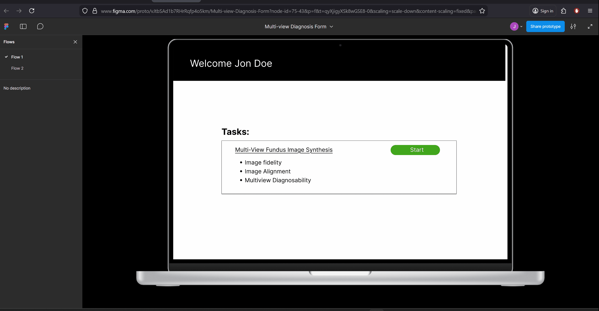

Motivation: Making your own personal temperature and humidity sensor.
Tools used
Git repository: link
Motivation: Ever wanted to share your flashcards or find pre made ones?
Tools used
Git repository: link
Motivation:: Design a web for doctors to use an evalute the usefulness of retinal of prematurity images generated by a GAN model .
Tools used
Figma Design: link

Motivation: What is a load balancer? How does it work?
Tools used
Git repository: link
For this section I hope that in the future I will be able to write more in depth walkthroughts about the above projects.
Hi,
I am Jonathan Suconota. I graduated from Queens College in 2025 with a Bachelor of Science Degree in
Computer Science. I am interested in becoming a backend engineer. My previous internship experience
lead me to work with micro controllers where I learned
important engineering design principles such as adding on to an existing systems instead of
modifying it completly because that could break backwards compatibility. I also learned and built
data pipelines
to handle incoming data from multiple temperature, humidity, and particle matter sensors the team at
ASRC has spread out all around NYC.
At my most recent role as an undergraduate researcher. I developed a web form to survey doctors on
images generated by an existing GAN model. This model generates different angles of RPO images given
a center image. During this process I explored technologies like AWS, Heroku for deployment and
sumarized the expected costs to my supervisor and offered alternatives.
Since you got this far leave a message for the next visitor.